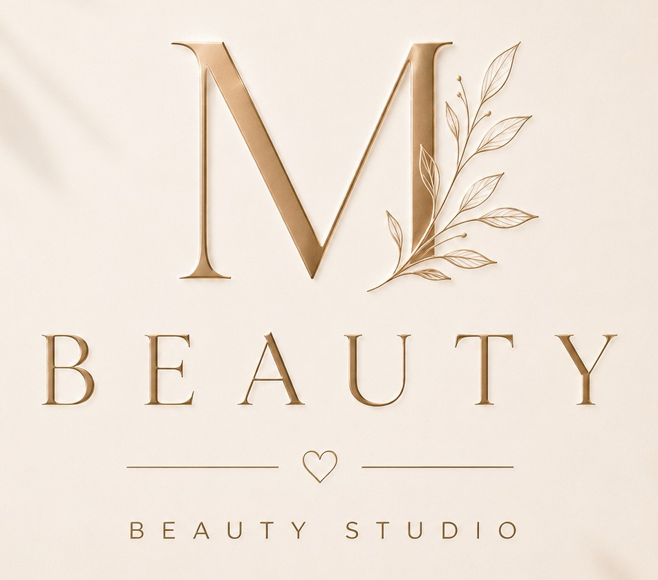

M-Beauty – Beauty Studio in Krefeld
Herzlich willkommen bei M-Beauty • Beauty Studio in Krefeld.

Hallo, ich bin Miri
Deine Miri
Mein Werdegang
Qualifikationen
Meine Philosophie
Aus dem Studio
Unsere Behandlungen
Ein Überblick über unsere aktuellen Behandlungen inklusive Preis und Dauer.
M Ultimate Skin Journey
Häufige Fragen
Antworten rund um Behandlungen, Preise und deinen Besuch im M-Beauty • Beauty Studio in Krefeld.
Wo befindet sich M-Beauty • Beauty Studio in Krefeld?
M-Beauty • Beauty Studio ist ein Kosmetik-Homestudio im Winnertzweg 10, 47803 Krefeld. Behandlungen finden nach vorheriger Terminvereinbarung statt.
Wie kann ich einen Termin vereinbaren?
Schreib mir am einfachsten per WhatsApp oder Instagram – ich melde mich persönlich bei dir zurück. Eine öffentliche Online-Terminbuchung gibt es bewusst nicht. Bei Behandlungen und Skin Journeys mit inkludierter Homecare ist zur verbindlichen Reservierung eine Anzahlung erforderlich, die vollständig auf den Gesamtpreis angerechnet wird.
Was ist Microneedling und für wen eignet es sich?
Beim Microneedling entstehen mit feinsten, sterilen Nadeln winzige Mikrokanäle in der Haut. Das unterstützt die hauteigene Erneuerung und hilft Wirkstoffen, tiefer einzuziehen. Viele Kundinnen wünschen sich die Behandlung bei feinen Linien, großen Poren, fahler Haut oder einem unebenen Hautbild. Ob Microneedling zu deiner Haut passt, klären wir vorab in der Hautanalyse.
Was kostet Microneedling in Krefeld bei M-Beauty?
Eine Einzelbehandlung M Microneedling PRO kostet 159 € – inklusive eines kleinen CNC MED HYAL Nachsorge-Kits für zuhause. Für intensivere Behandlungskonzepte gibt es die 3er-Kur für 449 € und die 6er-Kur für 849 €, jeweils mit abgestimmter MED HYAL Homecare.
Wie viele Microneedling-Sitzungen brauche ich?
Das Ergebnis baut sich in der Regel über mehrere Sitzungen auf. Anzahl und Abstände plane ich individuell anhand deines Hautzustands und deines Behandlungsziels.
Tut Microneedling weh?
Das Empfinden ist individuell. Die meisten Kundinnen beschreiben ein Kribbeln oder leichtes Pieksen. Direkt nach der Behandlung ist die Haut meist gerötet; das klingt in der Regel innerhalb kurzer Zeit ab. Du bekommst von mir persönliche Nachpflege-Empfehlungen.
Für wen ist Microneedling nicht geeignet?
Unter anderem in der Schwangerschaft, bei akuten Entzündungen oder Hauterkrankungen im Behandlungsbereich und bei bestimmten Medikamenten wird nicht behandelt. Deshalb füllst du vor der ersten Behandlung einen Anamnesebogen aus, und wir besprechen gemeinsam, ob die Behandlung für dich in Frage kommt.
Was ist der Unterschied zwischen Microneedling und Mikrodermabrasion?
Bei der Diamond Microdermabrasion (M Diamond Glow) werden oberflächliche Verhornungen kontrolliert mit Diamantaufsätzen abgetragen – für ein glatteres, verfeinertes und frischer wirkendes Hautbild. Microneedling (M Microneedling PRO) arbeitet mit feinen Nadeln und unterstützt die Hautregeneration intensiver; danach braucht die Haut etwas Ruhe. Welche Methode besser zu deinem Hautziel passt, besprechen wir in der Hautanalyse.
Welche Gesichtsbehandlung passt zu meiner Haut?
Jede Gesichtsbehandlung beginnt mit einer Hautanalyse: Ich messe Feuchtigkeit und Fettgehalt deiner Haut digital und beurteile sie zusätzlich durch genaues Ansehen und Ertasten. Je nach Hautziel passt zum Beispiel das M Essential Facial für Pflege und Feuchtigkeit, M Deep Clean bei verstopften Poren, M Ultrasound Glow für eine intensive Wirkstoffversorgung oder M Diamond Glow für ein verfeinertes Hautbild. Für längerfristige Hautziele gibt es die M Ultimate Skin Journeys über etwa 12 Wochen.
Wie lange hält ein Korean Lash Lift?
Je nach Wimpernzyklus hält das Ergebnis meist 6–8 Wochen. Beim Korean Lash Lift werden deine eigenen Wimpern ab dem Ansatz sanft angehoben – ganz ohne Extensions. Auf Wunsch kombinierbar mit Wimpernfärben. Bei empfindlichen Augen oder beim ersten Lash Lift ist vorab ein Verträglichkeitstest möglich.
Wie oft muss eine Gel-Nagelmodellage aufgefüllt werden?
Meist nach etwa 3–4 Wochen, abhängig von deinem Nagelwachstum. Ich biete Neumodellage und Auffüllen an, jeweils auch mit Verlängerung.
Wie sorgt M-Beauty für Hygiene?
Durch meine langjährige Erfahrung als OP-Schwester haben Hygiene und Präzision für mich höchste Priorität. Wiederverwendbare Instrumente werden nach jeder Kundin aufbereitet und – wo erforderlich – im Klasse-B-Autoklav sterilisiert. Beim Microneedling verwende ich ausschließlich sterile Einweg-Nadelmodule. Handtücher, Decken und Liegenauflagen werden nach jeder Kundin gewechselt, Liege und Oberflächen desinfiziert.
Interesse an einer Behandlung?
Wir arbeiten ohne öffentliche Online-Terminbuchung. Schreib uns einfach kurz per WhatsApp oder Instagram – wir melden uns persönlich bei dir zurück.
Du möchtest eine Behandlung anfragen oder hast noch Fragen? Schreib mir gerne per WhatsApp oder Instagram. Ich melde mich persönlich bei dir zurück.
Kontaktmöglichkeiten werden in Kürze ergänzt.
Winnertzweg 10
47803 Krefeld
Telefon: 0176 23695948